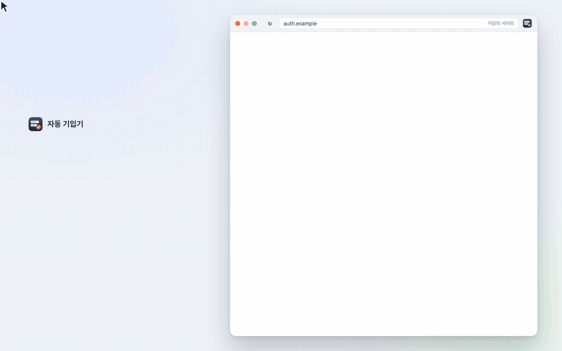

자동 기입기
본인인증·회원가입·주문서 — 매번 같은 값, 이제 한 번만
크롬 확장입니다. 한국 사이트의 쪼개진 칸(휴대폰 010·앞자리·뒷자리, 이메일 아이디@도메인 목록, 생년·월·일)을 알아보고, 들어갈 값을 칸 위에 파란 점선으로 먼저 보여 준 뒤 확인하면 한 번에 채워요. 값은 이 컴퓨터의 크롬 안에만, 암호화해서 둡니다.

영상 속 주황색 «예시인증»은 설명을 위한 가상의 사이트이고, 값은 모두 가짜예요.
자주 묻는 것
제안이 안 떠요
설치 후 시작하기를 마쳤는지 확인해 주세요. 처음 보는 사이트에서도 제안을 받으려면 «모든 사이트에서 제안 받기»를 켜야 해요. 그래도 안 뜨면 그 화면에서 ⇧⌘I(윈도우 Ctrl+Shift+K)를 눌러 직접 불러 보세요. 툴바가 없는 인증 창에서는 우클릭 → 자동 기입기를 쓰세요.
설치 후 시작하기를 마쳤는지 확인해 주세요. 처음 보는 사이트에서도 제안을 받으려면 «모든 사이트에서 제안 받기»를 켜야 해요. 그래도 안 뜨면 그 화면에서 ⇧⌘I(윈도우 Ctrl+Shift+K)를 눌러 직접 불러 보세요. 툴바가 없는 인증 창에서는 우클릭 → 자동 기입기를 쓰세요.
기억해 둔 화면인데 채우지 않아요
팝업에서 그 사이트 상태를 확인해 주세요 — «그만 채우기»로 꺼 둔 화면이면 «다시 켜기», 사이트 접근 권한이 없으면 «허용». 입력값 관리 → 개발자 도구의 «시험 모드»가 켜져 있으면 기억한 값을 쓰지 않아요.
팝업에서 그 사이트 상태를 확인해 주세요 — «그만 채우기»로 꺼 둔 화면이면 «다시 켜기», 사이트 접근 권한이 없으면 «허용». 입력값 관리 → 개발자 도구의 «시험 모드»가 켜져 있으면 기억한 값을 쓰지 않아요.
잘못된 값이 들어가요
채운 뒤 뜨는 알림의 값 고치기(또는 우클릭 → 이 화면에서 기억한 것 고치기)에서 칸마다 종류·값을 바꾸거나 뺄 수 있어요. 되돌리기로 원래대로 돌리고, 알려 주시면 고칠게요(아래 버그 제보).
채운 뒤 뜨는 알림의 값 고치기(또는 우클릭 → 이 화면에서 기억한 것 고치기)에서 칸마다 종류·값을 바꾸거나 뺄 수 있어요. 되돌리기로 원래대로 돌리고, 알려 주시면 고칠게요(아래 버그 제보).
이메일 칸에 주소 전체가 들어가요
일부 쇼핑몰은 도메인 목록에서 고르면 사이트가 스스로 «아이디@도메인»으로 합쳐요. 사람이 입력해도 똑같이 되는 그 사이트의 방식이에요.
일부 쇼핑몰은 도메인 목록에서 고르면 사이트가 스스로 «아이디@도메인»으로 합쳐요. 사람이 입력해도 똑같이 되는 그 사이트의 방식이에요.
제 정보는 어디에 있나요?
이 컴퓨터의 크롬 안(
이 컴퓨터의 크롬 안(
chrome.storage.local)에만, AES-256으로 암호화해서 둡니다. 서버가 없고, 어디로도 보내지 않고, 구글 계정으로 동기화하지도 않아요.
다만 풀 열쇠도 같은 크롬 안에 있어서 이 컴퓨터 계정에 들어온 사람까지는 막지 못해요 — 공용 컴퓨터에서는 쓰지 마세요.제출이나 인증번호 요청도 해 주나요?
아니요. 제출·동의·인증번호 요청은 언제나 직접 누르세요. 자동 기입기는 엔터 키도 보내지 않고, 비밀번호·인증번호·보안문자·주민번호 뒷자리·계좌 정보는 다루지 않아요.
아니요. 제출·동의·인증번호 요청은 언제나 직접 누르세요. 자동 기입기는 엔터 키도 보내지 않고, 비밀번호·인증번호·보안문자·주민번호 뒷자리·계좌 정보는 다루지 않아요.
단축키가 안 먹어요
다른 단축키와 겹치면 크롬이 비워 둬요.
다른 단축키와 겹치면 크롬이 비워 둬요.
chrome://extensions/shortcuts에서 «자동 기입기»의 단축키를 정해 주세요.맞춤 개발
회사·서비스에 맞춘 자동 입력이 필요하신가요?
반복 입력이 많은 업무 화면(사내 시스템·관공서 제출·쇼핑몰 관리자 등)에 맞춰 입력을 줄이는 도구를 만들어 드려요. 무엇을 어디에 매번 입력하는지, 몇 명이 쓰는지 적어 보내 주시면 빨라요.
맞춤 개발 문의하기
반복 입력이 많은 업무 화면(사내 시스템·관공서 제출·쇼핑몰 관리자 등)에 맞춰 입력을 줄이는 도구를 만들어 드려요. 무엇을 어디에 매번 입력하는지, 몇 명이 쓰는지 적어 보내 주시면 빨라요.
맞춤 개발 문의하기
문의 · 버그 제보
잘못 채우는 사이트, 있었으면 하는 기능을 알려 주세요. 사이트 주소와 무엇을 했는지 적어 주시면 빨리 고칠 수 있어요(이름·전화번호 같은 값은 가려 주세요).
버그 제보 ·
문의·제안 — hayden.park.apps@gmail.com
도움이 됐다면 개발자에게 커피 한 잔 ☕
© 2026 Hayden Park